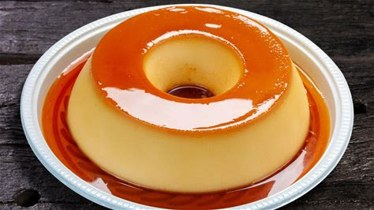

Pudding

Description
Pudding is my favorite dessert, it has many different recipes but I like the traditional one.
Ingredients
- 1 can of condensed milk
- 1 cup of cow's milk
- 4 whole eggs
- 1 cup of sugar (tea)
- ⅓ cup of water (tea)
Steps
- Preheat the oven to 180°C.
- In a pan, mix the sugar and water and bring to medium heat, stirring constantly, until it forms a golden
syrup.
- Pour the syrup into a pudding mold and set aside.
- In a blender, mix the condensed milk, milk, and eggs until you get a homogeneous mixture.
- Pour the mixture into the mold with the syrup.
- Cover the mold with aluminum foil and bake in a water bath for about 1 hour and 30 minutes.
- Remove from the oven and let it cool completely before unmolding.